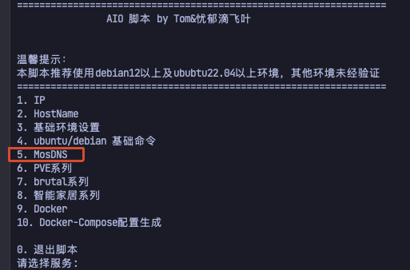
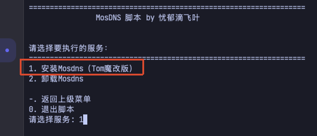
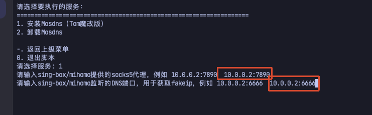
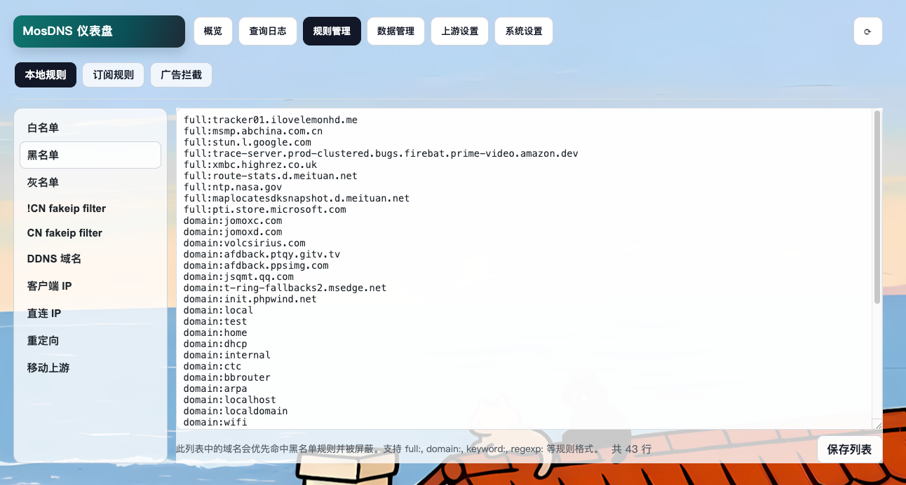
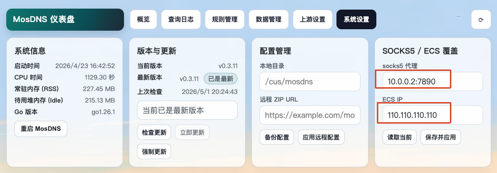
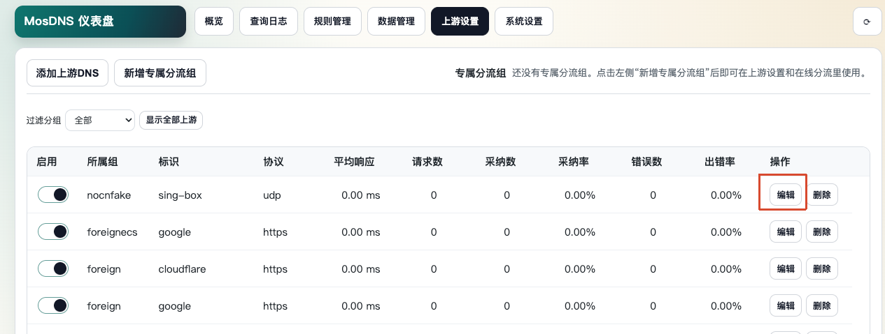
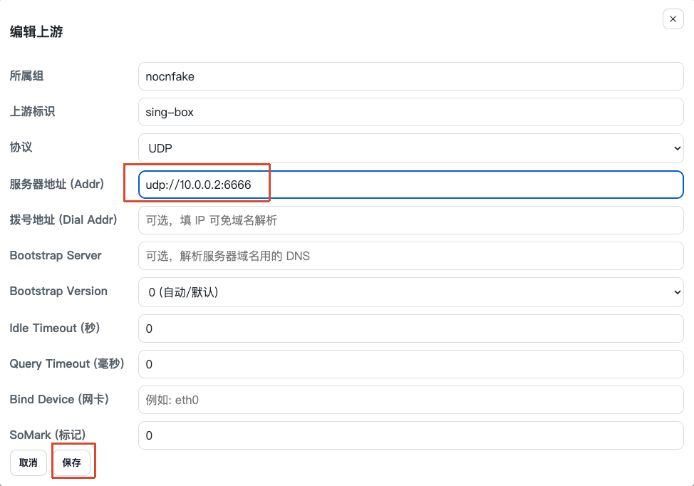
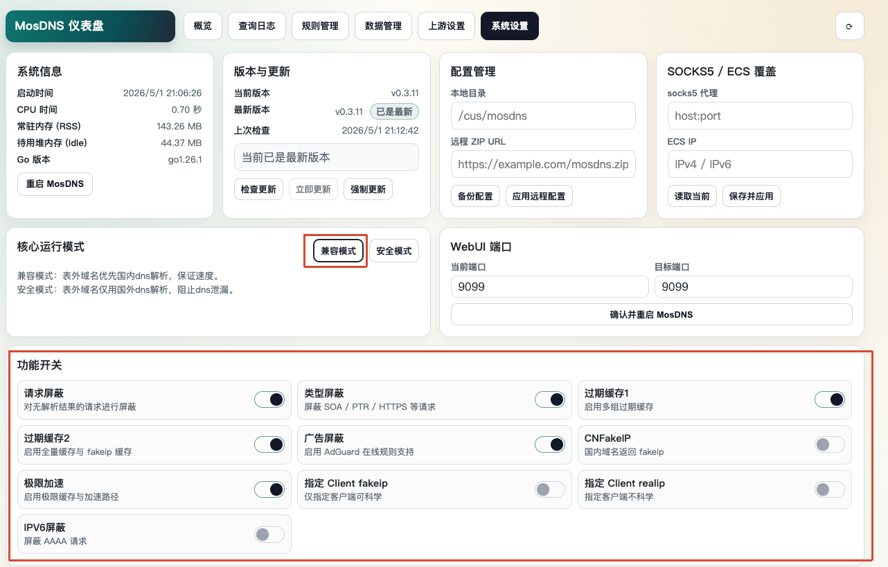

本文介绍 mosdns（Tom魔改版） 安装使用的方法
[TOC]
一、脚本部署 mosdns
需从github下载配置文件，自行准备科学环境
步骤 1： 新建 Debian 或 Ubuntu 虚拟机，运行安装脚本
wget --quiet --show-progress -O /mnt/main_install.sh https://raw.githubusercontent.com/jasonxtt/LinuxScripts/main/AIO/Scripts/main_install.sh && chmod +x /mnt/main_install.sh && /mnt/main_install.sh步骤 2： 输入 5 ，再输入 1 ，安装mosdns


步骤 3： 按提示输入以下信息：
- sing-box/mihomo 提供的socks代理 IP:端口（例如 10.0.0.2:7890）
- 输入sing-box/mihomo监听的DNS端口，用于获取fakeip (例如 10.0.0.2:6666)

步骤 4： 安装完成后，UI 地址为 IP:9099, 例如http://10.0.0.3:9099
MosDNS UI 界面预览

更多 mosdns 和 UI 设置问题：加入 TG 群咨询 点击加入 TG 群
二、手动部署 mosdns
配置 systemd 开机自启（Debian/Ubuntu）：
步骤 1： 下载 service 文件
curl -o /etc/systemd/system/mosdns.service https://raw.githubusercontent.com/jasonxtt/file/refs/heads/main/mosdns/service/mosdns.service步骤 2： 重新加载 systemd 配置
sudo systemctl daemon-reload步骤 3： 启用开机自启动
sudo systemctl enable mosdns.service步骤 4： release中下载对应架构的 mosdns二进制文件 (https://github.com/jasonxtt/mosdns/releases)
步骤 5： 解压获得mosdns二进制文件上传到 /usr/local/bin/
步骤 6： 赋予二进制文件执行权限
sudo chmod +x /usr/local/bin/mosdns步骤 7： 下载mosdns配置文件（https://raw.githubusercontent.com/jasonxtt/file/main/mosdns/config/config_all.zip ）
步骤 8： 解压得到 config_all 文件夹，更名为 mosdns ，上传至/cus目录
若无/cus目录需先创建目录
sudo mkdir /cus确保目录结构层级为 /cus/mosdns/config_custom.yaml
步骤 9： 解除系统服务对53端口的占用
sudo sed -i.bak -E 's/^\s*#?\s*DNSStubListener\s*=.*/DNSStubListener=no/' /etc/systemd/resolved.conf && sudo systemctl reload-or-restart systemd-resolved步骤 10： 启动mosdns
sudo systemctl start mosdns步骤 11： 打开mosdns UI ，所属虚拟机 IP:9099. ，例如：
（ http://10.0.0.3:9099 ）
步骤 12： 设置“SOCKS5 / ECS 覆盖”
- 打开”系统设置“，socks5 代理处填入sing-box或mihomo的socks代理端口，例如 10.0.0.2:7890
- ECS IP处填入自己的公网IP，若无公网IP打开（https://ip138.com/） ，填入显示的IPv4即可，例如110.110.110.110

步骤 13： 修改上游
仅需修改所属组为“nocnfake“这个上游为sing-box或mihomo的DNS监听端口，用途为获取fakeip


其余高级选项默认即可，进一步探索功能的高级用法欢迎进群交流
